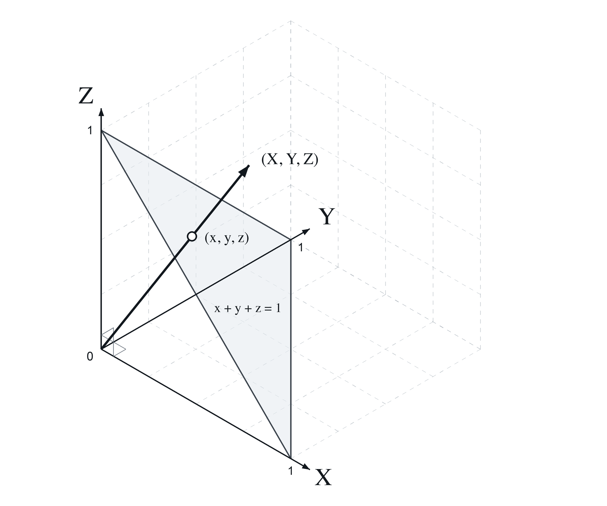
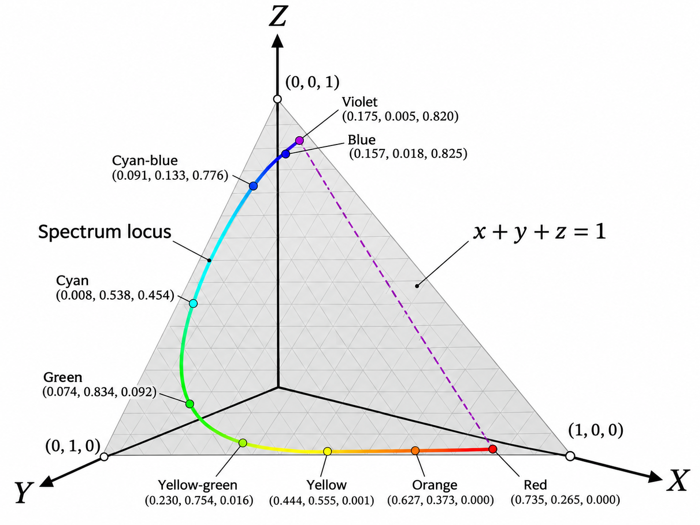
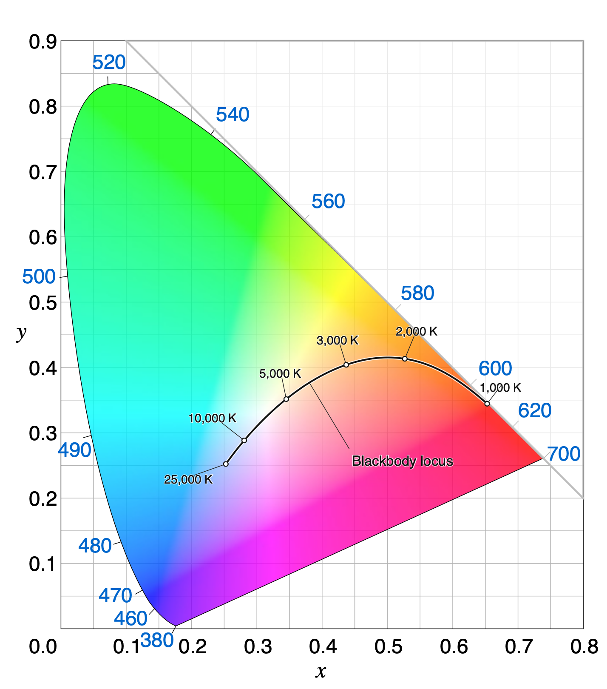
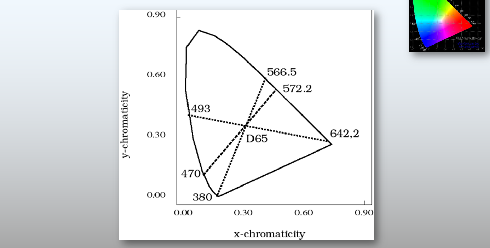
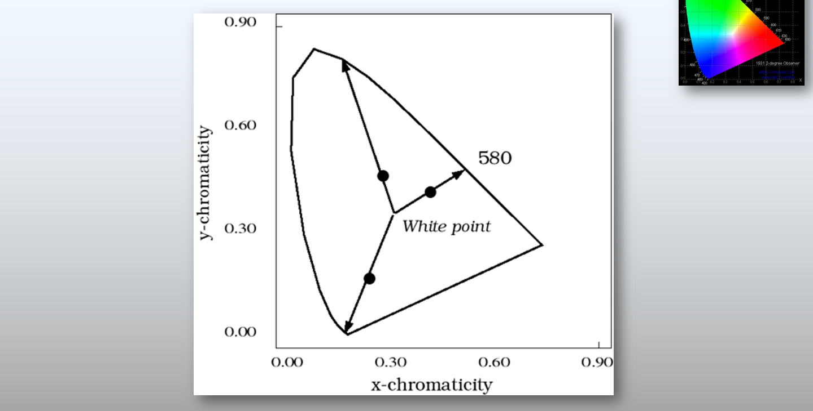
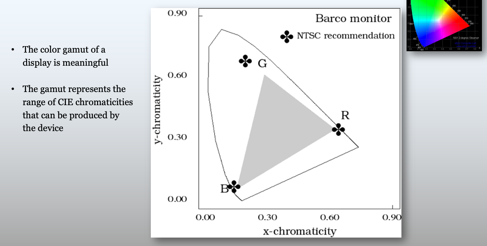
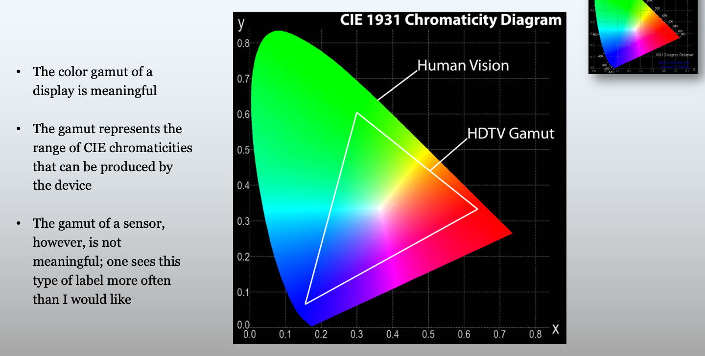
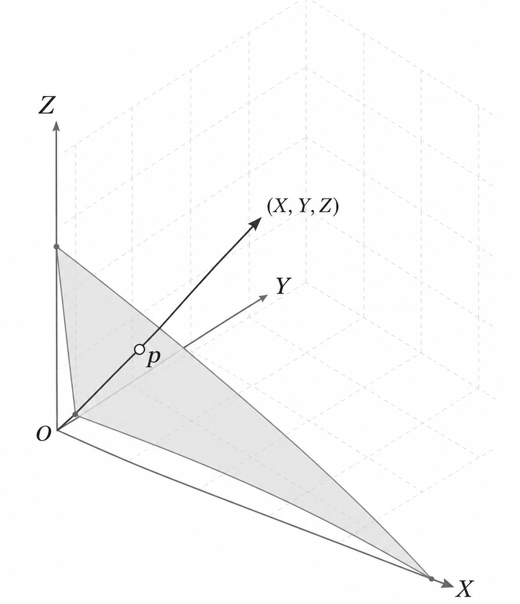
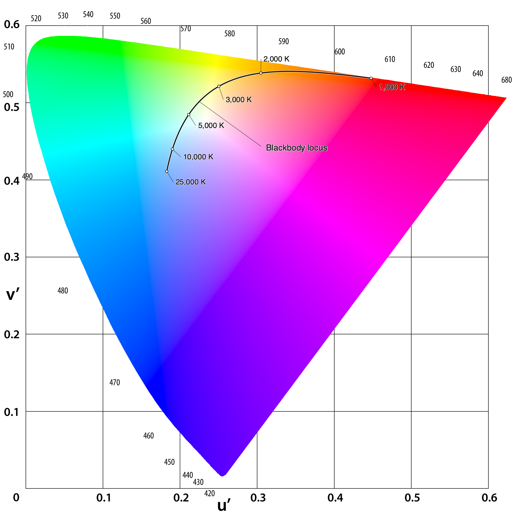

29 Color representations and metrics
Suggestions of all kinds for this book draft are welcome — whether it’s fixing small errors, raising bigger questions, or offering new perspectives. Please share comments through GitHub Issues. To make feedback easier to address, please point to the section you have in mind — by section number or a short snippet of text.
29.1 Color representations and metrics overview
Chapter 28 introduced the color-matching functions and the CIE \(\mathbf{XYZ}\) standard observer. The CMFs enable us to determine when two spectral power distributions match in appearance, and how a \(3 \times 3\) matrix calculation determines the display primary intensities needed to reproduce a target light.
However, color matching only tells us whether two lights look identical (\(\mathbf{C}\mathbf{t}_1 = \mathbf{C}\mathbf{t}_2\)). But it misses two important facts. First, the CMF calculation doesn’t tell us what the light looks like; is it red, yellow, blue? Second, when two lights do not match precisely the CMF calculation doesn’t tell us how large the perceptual difference will appear. These are important questions for image systems engineers.
This chapter introduces the tools used by engineers to visualize color gamuts and quantify visible color differences:
- Chromaticity coordinates for separating relative spectral composition from overall intensity and visualizing display gamuts in two dimensions.
- CIELAB (\(\Delta E_{ab}^*\)) for transforming linear tristimulus values into an approximately perceptually uniform space to measure large-field color differences.
- Spatial-CIELAB (S-CIELAB) for combining the spatial contrast sensitivity functions (Chapter 27) with CIELAB to predict the visibility of spatial-chromatic patterns such as halftones, color filter array artifacts, and display subpixels.
29.2 Chromaticity coordinates
When we describe the appearance of a light, it is natural to separate its overall brightness from its hue and saturation. How can we convert the three-dimensional CIE tristimulus values, \((X, Y, Z)\), into a two-dimensional representation that isolates relative spectral composition from intensity?
Chromaticity coordinates (xy) are the oldest and most widely used approach. If we normalize each tristimulus coordinate by the sum \(X + Y + Z\), scaling the intensity of a light by a positive factor cancels out in the ratio. Because the three normalized coordinates sum to one, only two of them—conventionally \((x, y)\)—are independent:
\[ \begin{aligned} x &= \frac{X}{X + Y + Z}, \qquad y = \frac{Y}{X + Y + Z}, \\[6pt] z &= \frac{Z}{X + Y + Z} = 1 - x - y . \end{aligned} \tag{29.1}\]
We can visualize the geometry of this mapping in two steps (Figure 29.1). First, for any tristimulus vector \((X, Y, Z)\), the normalized vector \((x, y, z)\) lies at the intersection of the ray from the origin through \((X, Y, Z)\) and the unit plane \(x + y + z = 1\) (the shaded gray triangle in Figure 29.1 (a)). Second, tracing the rays for monochromatic lights across the visible spectrum sweeps out a horseshoe-shaped curve on that unit plane called the spectrum locus (Figure 29.1 (b)). Projecting the unit plane orthographically onto the \((x, y)\) axes produces the standard two-dimensional CIE \((x, y)\) chromaticity diagram (Figure 29.2).


The spectrum locus is fundamental because it forms the outer boundary of the chromaticity coordinates for all physical lights. This property follows directly from a geometric rule of chromaticity diagrams: the chromaticity of an additive mixture of two lights always lies on the straight line segment connecting their individual chromaticities (see Note 29.1). Because every physical light is a non-negative mixture of spectral lights, the chromaticity of any real light must lie inside the convex hull of the spectrum locus, bounded below by the straight “line of purples” connecting the short- and long-wavelength ends of the spectrum.
The chromaticity coordinate of an additive mixture of two lights lies on the straight line segment connecting their chromaticities.
Suppose Light 1 and Light 2 have CIE tristimulus vectors \(\mathbf{C}_1 = (X_1, Y_1, Z_1)\) and \(\mathbf{C}_2 = (X_2, Y_2, Z_2)\), with coordinate sums
\[ S_1 = X_1 + Y_1 + Z_1 \quad \text{and} \quad S_2 = X_2 + Y_2 + Z_2 . \]
From Equation 29.1, the 2D chromaticity coordinates \(\mathbf{c}_1 = (x_1, y_1)\) and \(\mathbf{c}_2 = (x_2, y_2)\) satisfy
\[ (X_1, Y_1) = S_1 (x_1, y_1) \quad \text{and} \quad (X_2, Y_2) = S_2 (x_2, y_2) . \]
By superposition, mixing the two lights sums their tristimulus vectors:
\[ \mathbf{C}_3 = (X_1 + X_2, \; Y_1 + Y_2, \; Z_1 + Z_2) . \]
The coordinate sum of the mixture is \(S_3 = S_1 + S_2\), so the chromaticity of the mixture \(\mathbf{c}_3 = (x_3, y_3)\) is
\[ \begin{aligned} x_3 &= \frac{X_1 + X_2}{S_1 + S_2} = \frac{S_1 x_1 + S_2 x_2}{S_1 + S_2} = \left(\frac{S_1}{S_1 + S_2}\right) x_1 + \left(\frac{S_2}{S_1 + S_2}\right) x_2 , \\ y_3 &= \frac{Y_1 + Y_2}{S_1 + S_2} = \frac{S_1 y_1 + S_2 y_2}{S_1 + S_2} = \left(\frac{S_1}{S_1 + S_2}\right) y_1 + \left(\frac{S_2}{S_1 + S_2}\right) y_2 . \end{aligned} \]
Defining \(\alpha = \frac{S_1}{S_1 + S_2}\), we see that \(1 - \alpha = \frac{S_2}{S_1 + S_2}\), with \(0 < \alpha < 1\) whenever \(S_1, S_2 > 0\). In vector form, the chromaticity of the mixture is a convex combination of \(\mathbf{c}_1\) and \(\mathbf{c}_2\):
\[ \mathbf{c}_3 = \alpha \mathbf{c}_1 + (1 - \alpha) \mathbf{c}_2 . \]
As the relative intensities of the two lights vary, \(\mathbf{c}_3\) sweeps out the line segment connecting \(\mathbf{c}_1\) and \(\mathbf{c}_2\) in the \((x, y)\) chromaticity diagram.
29.2.1 Commonly used features of the chromaticity diagram
Several classic colorimetric concepts and engineering tools are described on the chromaticity diagram:
Blackbody (Planckian) locus As the temperature of a blackbody radiator increases from \(2000\text{ K}\) to \(9000\text{ K}\), its spectral power distribution shifts toward shorter wavelengths, tracing a smooth arc from orange-red through neutral white to bluish-white near the center of the chromaticity diagram (Figure 29.2).
The approximate color appearance across the CIE 1931 \((x, y)\) chromaticity diagram is illustrated schematically in Figure 29.2. White and neutral grays fall near the center of the diagram—where the blackbody locus traces the chromaticities of thermal radiators across color temperatures—while saturated spectral hues lie along the outer boundary.

Complementary wavelengths are defined as a pair of monochromatic lights whose additive mixture can match a chosen reference white (such as CIE D65). (Figure 29.3 (a)). Dominant wavelength is defined by a ray from the reference white point through a test light’s chromaticity out to the spectrum locus (Figure 29.3 (b)). The fractional distance along the segment from white to the boundary quantifies the excitation purity.


29.2.2 Display chromaticity gamuts
Extending the two-light mixture rule (Note 29.1) to three primary lights explains how engineers visualize a display’s color range. A display with three primaries (\(R\), \(G\), and \(B\)) can produce any additive mixture of its primaries with non-negative weights (Section 28.6). In the \((x, y)\) diagram, the set of all convex combinations of three points is the triangle whose vertices are the chromaticities of the three primaries (Figure 29.4 (a)).


Any chromaticity inside the triangle can be reproduced by the display; any chromaticity outside the triangle would require a negative weight on at least one primary (Equation 28.7) and is out of gamut. Notice, however, two important caveats when interpreting these triangles:
- Chromaticity omits luminance: The \((x, y)\) triangle is a 2D projection of a 3D color solid; it does not show how the range of achievable chromaticities shrinks near the display’s peak luminance or black level.
- Displays have primary gamuts; sensors do not: While a three-primary display is physically restricted to the convex triangle of its emitters (Figure 29.4 (b)), a camera sensor does not emit primaries—its ability to distinguish spectra depends on whether its spectral sensitivities are a linear transformation of the human color-matching functions and on sensor noise.
29.2.3 uv-chromaticity coordinates
The normalization of xy-chromaticity coordinates is simple and based on the sum of the \((X,Y,Z)\) values, or equivalently finding the intersection with the plane \(1 = X + Y + Z\). But there are other ways one could perform a normalization, and these might have some value.
An influential alternative is the u’v’-chromaticity coordinate. The formula for these chromaticity coordinates is
\[ u' = \frac{4X}{X + 15Y + 3Z}, \qquad v' = \frac{9Y}{X + 15Y + 3Z} \tag{29.2}\] (In the earlier CIE 1960 UCS definition, \(u = u'\) and \(v = \frac{2}{3}v' = \frac{6Y}{X + 15Y + 3Z}\).)
The mapping also takes any scaled version of the vector \(k*(X,Y,Z)\) into the same \(u',v'\) value. The plane for the intersection is


Transition to perceptual uniformity.